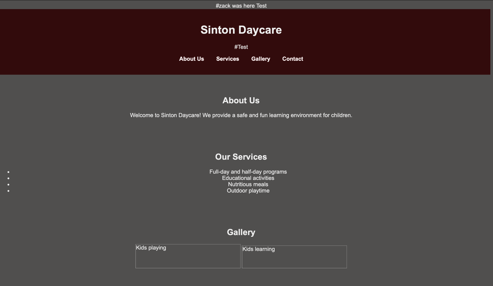
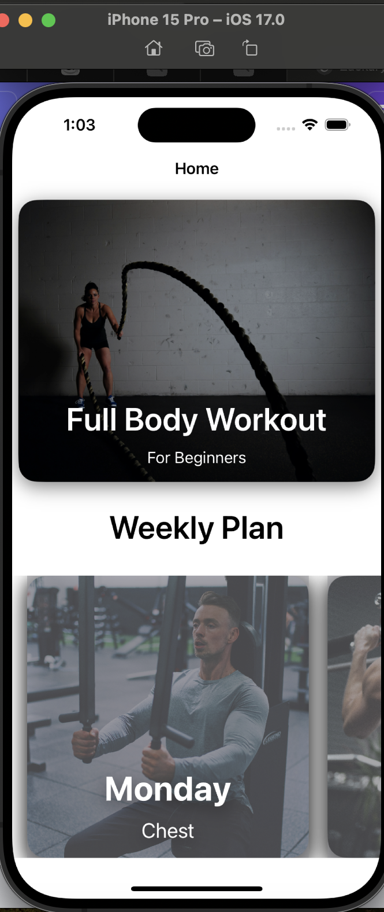
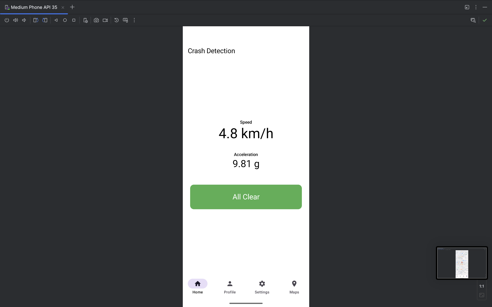

This project uses supervised machine learning to detect botnet-related traffic in network flow data. I used Zeek to extract flow-level features, cleaned the data in Python using pandas, and trained models like Random Forest and SVM to classify traffic as normal or malicious.
Python (pandas, scikit-learn, matplotlib)
Zeek (network log analysis)
Google Colab for model development
Feature selection using Chi-Square and mRMR
Daycare Business Website
I created a simple, responsive website using HTML and CSS for a relative who is starting a local daycare business. The site is designed to introduce the daycare’s mission, outline available services, and provide parents with basic contact information.
Built from scratch using semantic HTML and custom CSS
Responsive design with flexbox and media queries
Friendly, professional branding tailored to parents
Designed for future scalability and JavaScript integration

Workout App (iOS)
A clean, beginner-friendly fitness tracking app built for iOS using Objective-C and Xcode. This app allows users to browse structured workout routines like "Upper Body" sessions, displaying duration, number of exercises, and progress. Built with UIKit and Storyboards, the app features:
User Interface designed with intuitive navigation and workout detail screens
Objective-C for view logic and controller management using the MVC pattern
Launch screen customization and icon asset management with Assets.xcassets
Scene Delegation for handling app lifecycle and state transitions

Crash Detection App (Android)
A safety-focused mobile application built in Kotlin for Android that detects potential vehicle crashes and automatically alerts emergency contacts with the user’s real-time location. Designed with a user-first approach and responsive UI, the app integrates multiple Android services to provide fast, reliable notifications in critical situations.
üìç Real-Time Location Tracking using Google Maps API
üîê User Authentication and session handling via Firebase
⚠️ Crash Detection Logic using device motion sensors (accelerometer, gyroscope)
üîÑ Live Data Updates through Firebase Realtime Database
üì± Clean, responsive UI for easy navigation and safety status display

First-Person Shooter Game (Unreal Engine)
A personal game development project built in Unreal Engine, where I collaborated with friends to create a basic but functional first-person shooter experience. This project was both fun and educational, giving me hands-on experience with game logic, 3D environments, and character control.
üë§ Custom Player Model with integrated first-person camera
üéÆ Basic Movement System: Used WASD for navigation and SPACEBAR for jumping
ü߆ Blueprint Scripting to implement core gameplay logic
üåç Created and placed simple environmental assets and learned the fundamentals of level design
üõ†Ô∏è Experimented with Unreal Engine‚Äôs editor, physics system, and object interactions
üé• Project Walkthrough Videos
First Person Game - Part 1First Person Game - Part 2iOS Fitness App Walkthrough